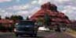
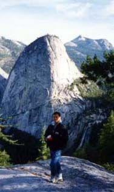
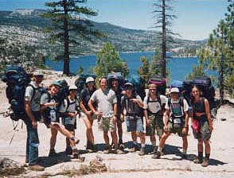

出発準備
なぜセドナに行くことになったのか
95年の夏、「聖なる予言」を読んでから、僕の人生に対する物の見方が、大きく変化していった。
多くの偶然が起き始め、ずっとあこがれていた、「ヨセミテでキャンプ」という夢が、その年の秋に実現してしまった。
 

ヨセミテ シエラ マヤの遺跡の上から
96年の秋、２才児と一緒に家族でディズニーワールドにいくという夢がかなった。
97年の夏、「アルケミスト」に勇気づけられて、アメリカ人のツアーに参加して、電気も、水道もない、本当の大自然のなかでキャンプする事ができた。（シエラ）
97年の秋、再び家族でディズニーワールドへ。
98年の冬、中米で冒険ツアーに参加。マヤの遺跡を訪ね、ジャングルのなか、カヤッキングを楽しんだ。
「僕たちは、目的をもってこの世に生まれてきた」
「夢はかなう」
「愛」
そのような内容の話しは、以前は、恥ずかしくなってしまいそうな考えだったが、納得して受け入れられるようになった。
そして、98年の4月。以前、「第十の予言」を読んだことがあったが、この本のポケットガイドに出会い、翻訳された山川紘矢・亜希子ご夫妻の<特別寄稿>「ヴォルテックスについて」に書かれている、セドナ紀行と地図に、共鳴した。本当にこんな素敵な場所があるなら、自分の全身心で確かめたい。強い気持ちで「セドナにいこう」と思い立った。
「第十の予言」に示唆されているような、エネルギーが取り出せる秘密が、大自然のなかに本当にあるのか、好奇心が抑え切れなくなったのだ。もし、そのエネルギーをうまく使えるなら、自分の取り分なくなることを心配して、奪い争いあう必要はなくなるではないか。もしかすると、神秘体験とやらも味わえるかも知れない。
旅行しすぎでは？という心配も感じたが、うまい具合に休暇がとれる調整ができたし、一緒にいってくれる、相棒もあらわれた。これも、ひょんなきっかけで数年振りに再会した従兄妹の千穂にセドナの事を話したら、彼女も「聖なる予言」、「第十の予言」の読者だった。しかも、僕が予定していた時期に休暇が取れるというではないか！
そして、なによりも、地球のエネルギーが噴き出しているというポルテックスを身をもって体験したかった。
日本にいるとセドナの情報というのは、本当に少なく、「第十の予言-ポケットガイド」が一番詳しいといってもいい。
その本に、載せられた小さな地図と、何とかなるさという、能天気さで、飛行機のチケットを購入することになった。
ホテルも何にも予定なし。とりあえず、出発日と帰国日だけは決まってたけど....
数年振りに再会した、いとこの千穂と、全く白紙の１週間が始まった。まずは、「第十の予言-ポケットガイド」に書かれてあったのアドバイスを頼りに、セドナの商工会議所を目指したのだった。
*僕がセドナにいくことにさせた本のリスト
- 聖なる予言 ジェームス・レッドフィールド著 角川書店
- アルケミスト パウロ・コエーリョ著 地湧社 、角川書店
- 第十の予言 ジェームス・レッドフィールド著 角川書店
- 第十の予言-ポケットガイド ジェームス・レッドフィールド著 角川書店
これらの、翻訳はすべて山川紘矢・亜希子ご夫妻が翻訳されています。
目次へ
戻る 次へ
Homeへ | セドナアップデイツ（最新情報） Copyright(C) 1998-2012 Takao Funami